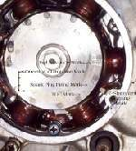

While you crank, there is a pop through the carburettor or air box, or a bang from the exhaust, and the engine may not start. A pop back through the intake means fuel is burning while the inlet valve is still open: usually a very lean mixture, a sticking or tight inlet valve, or a spark at the wrong moment. A bang in the exhaust means unburnt fuel collected there and was lit later, usually after a weak or missing spark or a flooded start. The K-Light 125 manual lists a loose ignition coil and a loose timing ring (reluctor) for "start failure with backfire" (PDF page 276).
Is it safe to ride?
With care if it starts and runs well afterwards. Repeated backfires can damage the air box, silencer, starter gears and your foot if you kick start. Do not ride if it also pinks or runs very hot.
Quick checks first
- Is the ignition coil firmly mounted and its wires tight?
- Strong fuel smell? The engine may be partly flooded.
- Carburettor: is the choke working when cold?
- Look at the intake rubber for cracks and loose clamps.
- Has the flywheel, CDI or ECU been changed recently?
Diagnose it step by step
1Where is the pop: through the carburettor or air box, or out of the exhaust?
- Intake side: go to step 2.
- Exhaust side: go to step 5.
2Is the intake rubber cracked or loose, or does spraying water around it change the cranking sound?
- Yes: an air leak makes the mixture too lean. Find an intake air leak.
- No: go to step 3.
3Is the coil firmly fixed and is the spark strong and regular?
- No: tighten the coil and its earth; Test the ignition coil and plug cap.
- Yes: go to step 4.
4Is the ignition timing correct, with the flywheel and pick-up tight?
- No: the cause may be a loose reluctor ring or sheared flywheel key. Check the ignition timing and Test the ignition pick-up.
- Yes: have the valve clearances checked. An inlet valve that does not close fully lets the flame back into the intake. Check and adjust valve clearance.
5Did the bang come after a lot of cranking or a wet plug?
- Yes: fuel collected in the exhaust. Clear a flooded engine, then check why it did not fire: Check for a spark safely.
- No: go to step 6.
6Is the spark weak or missing on some turns?
- Yes: Weak, thin or orange spark.
- No: check for an exhaust leak at the header joint, which can draw in air and cause popping: Find and fix an exhaust leak. Popping when slowing down is a different fault: Popping or banging from the exhaust when slowing down.
Causes, most likely first
| Cause | How to confirm | Fix |
|---|---|---|
| Fuel built up after many tries | Bang after long cranking; wet plug | Clear a flooded engine |
| Loose coil or poor coil earth | Coil moves; spark irregular | Test the ignition coil and plug cap |
| Air leak at intake (lean) | Spray test | Find an intake air leak |
| Loose reluctor ring, flywheel or pick-up | Timing marks move; after left-side work | Check the ignition timing |
| Inlet valve too tight | Feeler gauge check | Check and adjust valve clearance |
| Exhaust leak | Puffing at header joint | Find and fix an exhaust leak |